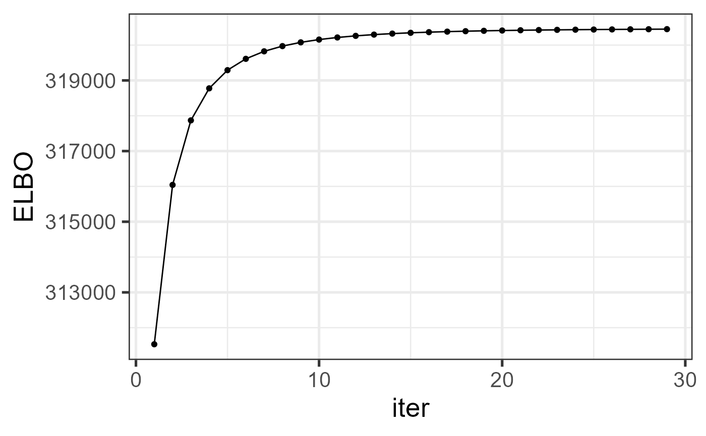
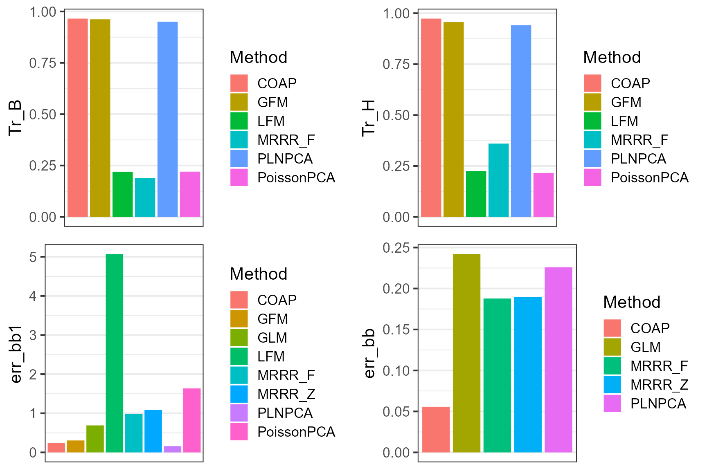

This vignette introduces the usage of COAP for the analysis of high-dimensional count data with additional high-dimensional covariates, by comparison with other methods.
The package can be loaded with the command:
library(COAP)
library(GFM)
#> Loading required package: doSNOW
#> Loading required package: foreach
#> Loading required package: iterators
#> Loading required package: snow
#> Loading required package: parallel
#>
#> Attaching package: 'parallel'
#> The following objects are masked from 'package:snow':
#>
#> clusterApply, clusterApplyLB, clusterCall, clusterEvalQ,
#> clusterExport, clusterMap, clusterSplit, makeCluster, parApply,
#> parCapply, parLapply, parRapply, parSapply, splitIndices,
#> stopCluster
#> GFM : Generalized factor model is implemented for ultra-high dimensional data with mixed-type variables.
#> Two algorithms, variational EM and alternate maximization, are designed to implement the generalized factor model,
#> respectively. The factor matrix and loading matrix together with the number of factors can be well estimated.
#> This model can be employed in social and behavioral sciences, economy and finance, and genomics,
#> to extract interpretable nonlinear factors. More details can be referred to
#> Wei Liu, Huazhen Lin, Shurong Zheng and Jin Liu. (2021) <doi:10.1080/01621459.2021.1999818>. Check out our Package website (https://feiyoung.github.io/GFM/docs/index.html) for a more complete description of the methods and analysesFirst, we generate the data simulated data.
n <- 200; p <- 200;
d= 50
rank0 <- 6;
q = 5;
datList <- gendata_simu(seed = 1, n=n, p=p, d= d, rank0 = rank0, q= q, rho=c(2, 2),
sigma2_eps = 1)
#> Loading required package: MASS
X_count <- datList$X; Z <- datList$Z
H0 <- datList$H0; B0 <- datList$B0
bbeta0 <- cbind( datList$mu0, datList$bbeta0)Fit the COAP model using the function RR_COAP() in the R package COAP. Users can use ?RR_COAP to see the details about this function
hq <- 5; hr <- 6
system.time({
tic <- proc.time()
reslist <- RR_COAP(X_count, Z= Z, q=hq, rank_use= hr, epsELBO = 1e-6)
toc <- proc.time()
time_coap <- toc[3] - tic[3]
})
#> Calculate initial values...
#> Loading required package: irlba
#> Loading required package: Matrix
#> iter = 2, ELBO= 311531.420000, dELBO=1.000145
#> iter = 3, ELBO= 316042.737970, dELBO=0.014481
#> iter = 4, ELBO= 317869.490388, dELBO=0.005780
#> iter = 5, ELBO= 318776.120476, dELBO=0.002852
#> iter = 6, ELBO= 319290.972752, dELBO=0.001615
#> iter = 7, ELBO= 319611.373938, dELBO=0.001003
#> iter = 8, ELBO= 319824.015899, dELBO=0.000665
#> iter = 9, ELBO= 319971.850666, dELBO=0.000462
#> iter = 10, ELBO= 320078.245025, dELBO=0.000333
#> iter = 11, ELBO= 320156.887531, dELBO=0.000246
#> iter = 12, ELBO= 320216.278565, dELBO=0.000186
#> iter = 13, ELBO= 320261.942528, dELBO=0.000143
#> iter = 14, ELBO= 320297.599344, dELBO=0.000111
#> iter = 15, ELBO= 320325.824786, dELBO=0.000088
#> iter = 16, ELBO= 320348.442910, dELBO=0.000071
#> iter = 17, ELBO= 320366.769724, dELBO=0.000057
#> iter = 18, ELBO= 320381.769961, dELBO=0.000047
#> iter = 19, ELBO= 320394.160880, dELBO=0.000039
#> iter = 20, ELBO= 320404.482598, dELBO=0.000032
#> iter = 21, ELBO= 320413.146652, dELBO=0.000027
#> iter = 22, ELBO= 320420.470080, dELBO=0.000023
#> iter = 23, ELBO= 320426.699664, dELBO=0.000019
#> iter = 24, ELBO= 320432.029390, dELBO=0.000017
#> iter = 25, ELBO= 320436.613167, dELBO=0.000014
#> iter = 26, ELBO= 320440.574186, dELBO=0.000012
#> iter = 27, ELBO= 320444.011876, dELBO=0.000011
#> iter = 28, ELBO= 320447.007121, dELBO=0.000009
#> iter = 29, ELBO= 320449.626207, dELBO=0.000008
#> iter = 30, ELBO= 320451.923844, dELBO=0.000007
#> user system elapsed
#> 0.09 0.01 0.75Check the increased property of the envidence lower bound function.
library(ggplot2)
#> Warning: package 'ggplot2' was built under R version 4.1.3
dat_iter <- data.frame(iter=1:length(reslist$ELBO_seq), ELBO=reslist$ELBO_seq)
ggplot(data=dat_iter, aes(x=iter, y=ELBO)) + geom_line() + geom_point() + theme_bw(base_size = 20)
We calculate the metrics to measure the estimatioin accuracy, where the trace statistic is used to measure the estimation accuracy of loading matrix and prediction accuracy of factor matrix, which is evaluated by the function measurefun() in the R package GFM, and the root of mean square error is adopted to measure the estimation error of bbeta.
library(GFM)
metricList <- list()
metricList$COAP <- list()
metricList$COAP$Tr_H <- measurefun(reslist$H, H0)
metricList$COAP$Tr_B <- measurefun(reslist$B, B0)
norm_vec <- function(x) sqrt(sum(x^2/ length(x)))
metricList$COAP$err_bb <- norm_vec(reslist$bbeta-bbeta0)
metricList$COAP$err_bb1 <- norm_vec(reslist$bbeta[,1]-bbeta0[,1])
metricList$COAP$Time <- time_coapWe compare COAP with various prominent methods in the literature. They are (1) High-dimensional LFM (Bai and Ng 2002) implemented in the R package GFM; (2) PoissonPCA (Kenney et al. 2021) implemented in the R package PoissonPCA; (3) Zero-inflated Poisson factor model (ZIPFA, Xu et al. 2021) implemented in the R package ZIPFA; (4) Generalized factor model (Liu et al. 2023) implemented in the R package GFM; (5) PLNPCA (Chiquet et al. 2018) implemented in the R package PLNmodels; (6) Generalized Linear Latent Variable Models (GLLVM, Hui et al. 2017) implemented in the R package gllvm. (7) Poisson regression model for each \(x_{ij}, (j = 1,··· ,p)\), implemented in stats R package; (8) Multi-response reduced-rank Poisson regression model (MMMR, Luo et al. 2018) implemented in rrpack R package.
(1). First, we implemented the linear factor model (LFM) and record the metrics that measure the estimation accuracy and computational cost.
metricList$LFM <- list()
tic <- proc.time()
fit_lfm <- Factorm(X_count, q=q)
toc <- proc.time()
time_lfm <- toc[3] - tic[3]
hbb1 <- colMeans(X_count)
metricList$LFM$Tr_H <- measurefun(fit_lfm$hH, H0)
metricList$LFM$Tr_B <- measurefun(fit_lfm$hB, B0)
metricList$LFM$err_bb1 <- norm_vec(hbb1- bbeta0[,1])
metricList$LFM$err_bb <- NA
metricList$LFM$Time <- time_lfm(2). Then, we implemented PoissonPCA and recorded the metrics.
metricList$PoissonPCA <- list()
library(PoissonPCA)
tic <- proc.time()
fit_poispca <- Poisson_Corrected_PCA(X_count, k= hq)
#> Warning in sqrt(eig$values): NaNs produced
toc <- proc.time()
time_ppca <- toc[3] - tic[3]
hbb1 <- colMeans(X_count)
metricList$PoissonPCA$Tr_H <- measurefun(fit_poispca$scores, H0)
metricList$PoissonPCA$Tr_B <- measurefun(fit_poispca$loadings, B0)
metricList$PoissonPCA$err_bb1 <- norm_vec(log(1+fit_poispca$center)- bbeta0[,1])
metricList$PoissonPCA$err_bb <- NA
metricList$PoissonPCA$Time <- time_ppca## ZIPFA runs very slowly, so we do not run it here.
library(ZIPFA)
metricList$ZIPFA <- list()
system.time(
tic <- proc.time()
fit_zipfa <- ZIPFA(X_count, k=hq, display = FALSE)
toc <- proc.time()
time_zipfa <- toc[3] - tic[3]
)
idx_max_like <- which.max(fit_zipfa$Likelihood)
hbb1 <- colMeans(X_count)
metricList$ZIPFA$Tr_H <- measurefun(fit_zipfa$Ufit[[idx_max_like]], H0)
metricList$ZIPFA$Tr_B <- measurefun(fit_zipfa$Vfit[[idx_max_like]], B0)
metricList$PoissonPCA$Time <- time_zipfa
metricList$GFM <- list()
tic <- proc.time()
fit_gfm <- gfm(list(X_count), type='poisson', q= q, verbose = F)
toc <- proc.time()
time_gfm <- toc[3] - tic[3]
metricList$GFM$Tr_H <- measurefun(fit_gfm$hH, H0)
metricList$GFM$Tr_B <- measurefun(fit_gfm$hB, B0)
metricList$GFM$err_bb1 <- norm_vec(fit_gfm$hmu- bbeta0[,1])
metricList$GFM$err_bb <- NA
metricList$GFM$Time <- time_gfm
PLNPCA_run <- function(X_count, covariates, q, Offset=rep(1, nrow(X_count))){
require(PLNmodels)
if(!is.character(Offset)){
dat_plnpca <- prepare_data(X_count, covariates)
dat_plnpca$Offset <- Offset
}else{
dat_plnpca <- prepare_data(X_count, covariates, offset = Offset)
}
d <- ncol(covariates)
# offset(log(Offset))+
formu <- paste0("Abundance ~ 1 + offset(log(Offset))+",paste(paste0("V",1:d), collapse = '+'))
myPCA <- PLNPCA(as.formula(formu), data = dat_plnpca, ranks = q)
myPCA1 <- getBestModel(myPCA)
myPCA1$scores
res_plnpca <- list(PCs= myPCA1$scores, bbeta= myPCA1$model_par$B,
loadings=myPCA1$model_par$C)
return(res_plnpca)
}
tic <- proc.time()
fit_plnpca <- PLNPCA_run(X_count, covariates = Z[,-1], q= q)
#> Loading required package: PLNmodels
#> Warning: package 'PLNmodels' was built under R version 4.1.3
#> This is packages 'PLNmodels' version 1.0.1
#> Use future::plan(multicore/multisession) to speed up PLNPCA/PLNmixture/stability_selection.
#> Warning in common_samples(counts, covariates): There are no matching names in the count matrix and the covariates data.frame.
#> Function will proceed assuming:
#> - samples are in the same order;
#> - samples are rows of the abundance matrix.
#>
#> Initialization...
#>
#> Adjusting 1 PLN models for PCA analysis.
#> Rank approximation = 5
#> Post-treatments
#> DONE!
toc <- proc.time()
time_plnpca <- toc[3] - tic[3]
message(time_plnpca, " seconds")
#> 37.86 seconds
metricList$PLNPCA$Tr_H <- measurefun(fit_plnpca$PCs, H0)
metricList$PLNPCA$Tr_B <- measurefun(fit_plnpca$loadings, B0)
metricList$PLNPCA$err_bb1 <- norm_vec(fit_plnpca$bbeta[,1]- bbeta0[,1])
metricList$PLNPCA$err_bb <- norm_vec(as.vector(fit_plnpca$bbeta) - as.vector(bbeta0))
metricList$PLNPCA$Time <- time_plnpca## GLLVM runs very slowly, so we do not run it here.
library(gllvm)
colnames(Z) <- c(paste0("V",1: ncol(Z)))
tic <- proc.time()
fit <- gllvm(y=X_count, X=Z, family=poisson(), num.lv= q, control = list(trace=T))
toc <- proc.time()
time_gllvm <- toc[3] - tic[3]
metricList$GLLVM <- list()
metricList$GLLVM$Tr_H <- measurefun(fit$lvs, H0)
metricList$GLLVM$Tr_B <- measurefun(fit$params$theta, B0)
metricList$GLLVM$err_bb1 <- norm_vec(fit$params$beta0- bbeta0[,1])
metricList$GLLVM$err_bb <- norm_vec(as.vector(cbind(fit$params$beta0,fit$params$Xcoef)) - as.vector(bbeta0))
metricList$GLLVM$Time <- time_gllvm
}
PoisReg <- function(X_count, covariates){
library(stats)
hbbeta <- apply(X_count, 2, function(x){
glm1 <- glm(x~covariates+0, family = "poisson")
coef(glm1)
} )
return(t(hbbeta))
}
tic <- proc.time()
hbbeta_poisreg <- PoisReg(X_count, Z)
toc <- proc.time()
time_poisreg <- toc[3] - tic[3]
metricList$GLM <- list()
metricList$GLM$Tr_H <- NA
metricList$GLM$Tr_B <- NA
metricList$GLM$err_bb1 <- norm_vec(hbbeta_poisreg[,1]- bbeta0[,1])
metricList$GLM$err_bb <- norm_vec(as.vector(hbbeta_poisreg) - as.vector(bbeta0))
metricList$GLM$Time <- time_poisreg
mrrr_run <- function(Y, X, rank0, q=NULL, family=list(poisson()), familygroup=rep(1,ncol(Y))){
require(rrpack)
n <- nrow(Y); p <- ncol(Y)
if(!is.null(q)){
rank0 <- rank0+q
X <- cbind(X, diag(n))
}
svdX0d1 <- svd(X)$d[1]
init1 = list(kappaC0 = svdX0d1 * 5) ## this setting follows the example that authors provided.
fit.mrrr <- mrrr(Y=Y, X=X[,-1], family = family, familygroup = familygroup,
penstr = list(penaltySVD = "rankCon", lambdaSVD = 0.1),
init = init1, maxrank = rank0)
hbbeta_mrrr <-t(fit.mrrr$coef[1:ncol(Z), ])
if(!is.null(q)){
Theta_hb <- (fit.mrrr$coef[(ncol(Z)+1): (nrow(Z)+ncol(Z)), ])
svdTheta <- svd(Theta_hb, nu=q, nv=q)
return(list(hbbeta=hbbeta_mrrr, factor=svdTheta$u, loading=svdTheta$v))
}else{
return(list(hbbeta=hbbeta_mrrr))
}
}
tic <- proc.time()
res_mrrrz <- mrrr_run(X_count, Z, rank0)
#> Loading required package: rrpack
toc <- proc.time()
time_mrrrz <- toc[3] - tic[3]
metricList$MRRR_Z <- list()
metricList$MRRR_Z$Tr_H <- NA
metricList$MRRR_Z$Tr_B <-NA
metricList$MRRR_Z$err_bb1 <- norm_vec(res_mrrrz$hbbeta[,1]- bbeta0[,1])
metricList$MRRR_Z$err_bb <- norm_vec(as.vector(res_mrrrz$hbbeta) - as.vector(bbeta0))
metricList$MRRR_Z$Time <- time_mrrrz
tic <- proc.time()
res_mrrrf <- mrrr_run(X_count, Z, rank0, q=q)
toc <- proc.time()
time_mrrrf <- toc[3] - tic[3]
metricList$MRRR_F <- list()
metricList$MRRR_F$Tr_H <- measurefun(res_mrrrf$factor, H0)
metricList$MRRR_F$Tr_B <- measurefun(res_mrrrf$loading, B0)
metricList$MRRR_F$err_bb1 <- norm_vec(res_mrrrf$hbbeta[,1]- bbeta0[,1])
metricList$MRRR_F$err_bb <- norm_vec(as.vector(res_mrrrf$hbbeta) - as.vector(bbeta0))
metricList$MRRR_F$Time <- time_mrrrfNext, we summarized the metrics for COAP and other compared methods in a dataframe object.
list2vec <- function(xlist){
nn <- length(xlist)
me <- rep(NA, nn)
idx_noNA <- which(sapply(xlist, function(x) !is.null(x)))
for(r in idx_noNA) me[r] <- xlist[[r]]
return(me)
}
dat_metric <- data.frame(Tr_H = sapply(metricList, function(x) x$Tr_H),
Tr_B = sapply(metricList, function(x) x$Tr_B),
err_bb1 =sapply(metricList, function(x) x$err_bb1),
err_bb = list2vec(lapply(metricList, function(x) x[['err_bb']])),
Method = names(metricList))
dat_metric
#> Tr_H Tr_B err_bb1 err_bb Method
#> COAP 0.9735503 0.9653009 0.2350772 0.05569392 COAP
#> LFM 0.2248456 0.2200929 5.0689133 NA LFM
#> PoissonPCA 0.2160776 0.2203730 1.6349874 NA PoissonPCA
#> GFM 0.9563598 0.9618231 0.3049976 NA GFM
#> PLNPCA 0.9408787 0.9505264 0.1595667 0.22585069 PLNPCA
#> GLM NA NA 0.6897184 0.24198444 GLM
#> MRRR_Z NA NA 1.0844298 0.18969631 MRRR_Z
#> MRRR_F 0.3599355 0.1891922 0.9775735 0.18778301 MRRR_FPlot the results for COAP and other methods, which suggests that COAP achieves better estimation accuracy for the quantiites of interest.
library(cowplot)
p1 <- ggplot(data=subset(dat_metric, !is.na(Tr_B)), aes(x= Method, y=Tr_B, fill=Method)) + geom_bar(stat="identity") + xlab(NULL) + scale_x_discrete(breaks=NULL) + theme_bw(base_size = 16)
p2 <- ggplot(data=subset(dat_metric, !is.na(Tr_H)), aes(x= Method, y=Tr_H, fill=Method)) + geom_bar(stat="identity") + xlab(NULL) + scale_x_discrete(breaks=NULL)+ theme_bw(base_size = 16)
p3 <- ggplot(data=subset(dat_metric, !is.na(err_bb1)), aes(x= Method, y=err_bb1, fill=Method)) + geom_bar(stat="identity") + xlab(NULL) + scale_x_discrete(breaks=NULL)+ theme_bw(base_size = 16)
p4 <- ggplot(data=subset(dat_metric, !is.na(err_bb)), aes(x= Method, y=err_bb, fill=Method)) + geom_bar(stat="identity") + xlab(NULL) + scale_x_discrete(breaks=NULL)+ theme_bw(base_size = 16)
plot_grid(p1,p2,p3, p4, nrow=2, ncol=2)
We applied the singular value ratio based method to select the number of factors and the rank of coefficient matrix. The results showed that the SVR method has the potential to identify the true values.
datList <- gendata_simu(seed = 1, n=n, p=p, d= d, rank0 = rank0, q= q, rho=c(3, 6),
sigma2_eps = 1)
X_count <- datList$X; Z <- datList$Z
res1 <- selectParams(X_count=datList$X, Z=datList$Z, verbose=F)
#> Calculate initial values...
print(c(q_true=q, q_est=res1['hq']))
#> q_true q_est.hq
#> 5 5
print(c(r_true=rank0, r_est=res1['hr']))
#> r_true r_est.hr
#> 6 6Session Info
sessionInfo()
#> R version 4.1.2 (2021-11-01)
#> Platform: x86_64-w64-mingw32/x64 (64-bit)
#> Running under: Windows 10 x64 (build 22621)
#>
#> Matrix products: default
#>
#> locale:
#> [1] LC_COLLATE=Chinese (Simplified)_China.936
#> [2] LC_CTYPE=Chinese (Simplified)_China.936
#> [3] LC_MONETARY=Chinese (Simplified)_China.936
#> [4] LC_NUMERIC=C
#> [5] LC_TIME=Chinese (Simplified)_China.936
#>
#> attached base packages:
#> [1] parallel stats graphics grDevices utils datasets methods
#> [8] base
#>
#> other attached packages:
#> [1] cowplot_1.1.1 rrpack_0.1-11 PLNmodels_1.0.1 PoissonPCA_1.0.3
#> [5] ggplot2_3.4.1 irlba_2.3.5 Matrix_1.4-0 MASS_7.3-55
#> [9] GFM_1.2.1 doSNOW_1.0.20 snow_0.4-4 iterators_1.0.14
#> [13] foreach_1.5.2 COAP_1.1
#>
#> loaded via a namespace (and not attached):
#> [1] tidyr_1.2.0 sass_0.4.1 splines_4.1.2
#> [4] bit64_4.0.5 jsonlite_1.8.0 bslib_0.3.1
#> [7] assertthat_0.2.1 highr_0.9 yaml_2.3.6
#> [10] corrplot_0.92 globals_0.15.0 pillar_1.9.0
#> [13] lattice_0.20-45 glue_1.6.2 torch_0.9.1
#> [16] digest_0.6.29 colorspace_2.1-0 htmltools_0.5.2
#> [19] pkgconfig_2.0.3 listenv_0.8.0 purrr_0.3.4
#> [22] scales_1.2.1 processx_3.5.2 tibble_3.2.1
#> [25] generics_0.1.2 farver_2.1.1 cachem_1.0.6
#> [28] withr_2.5.0 cli_3.2.0 survival_3.2-13
#> [31] magrittr_2.0.3 crayon_1.5.1 memoise_2.0.1
#> [34] evaluate_0.15 ps_1.6.0 fs_1.5.2
#> [37] fansi_1.0.4 future_1.26.1 parallelly_1.32.0
#> [40] textshaping_0.3.6 tools_4.1.2 lifecycle_1.0.3
#> [43] lassoshooting_0.1.5-1 stringr_1.4.0 glassoFast_1.0
#> [46] glmnet_4.1-3 munsell_0.5.0 callr_3.7.0
#> [49] compiler_4.1.2 pkgdown_2.0.6 jquerylib_0.1.4
#> [52] systemfonts_1.0.4 rlang_1.1.0 grid_4.1.2
#> [55] nloptr_2.0.0 rstudioapi_0.13 igraph_1.3.5
#> [58] labeling_0.4.2 rmarkdown_2.11 gtable_0.3.3
#> [61] codetools_0.2-18 DBI_1.1.2 R6_2.5.1
#> [64] gridExtra_2.3 knitr_1.37 dplyr_1.0.9
#> [67] fastmap_1.1.0 future.apply_1.9.0 bit_4.0.4
#> [70] utf8_1.2.3 rprojroot_2.0.3 ragg_1.2.2
#> [73] coro_1.0.3 shape_1.4.6 desc_1.4.0
#> [76] stringi_1.7.6 Rcpp_1.0.10 vctrs_0.6.1
#> [79] tidyselect_1.1.2 xfun_0.29